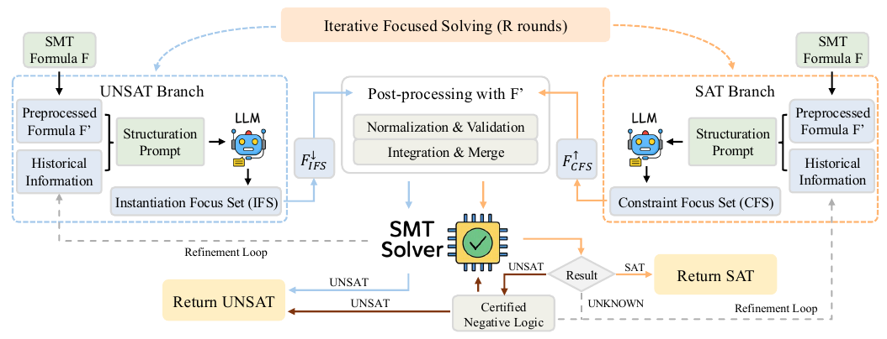
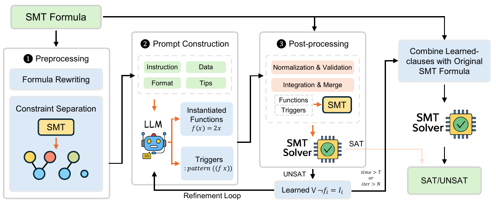
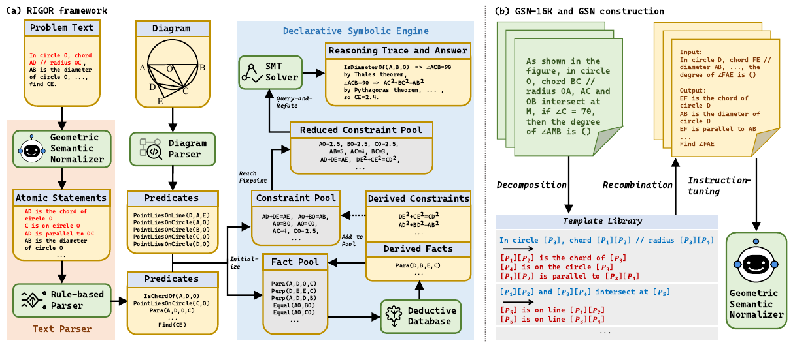
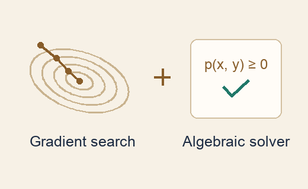

Education
-
University of Chinese Academy of Sciences (UCAS) Ph.D. student, Laboratory of Parallel Software and Computational Science Institute of Software, Chinese Academy of Sciences (ISCAS)2023–present
-
Peking University (PKU) Undergraduate studies, School of Electronics Engineering and Computer Science2019–2023
Publications
-
-

-

RIGOR: Atomic Semantic Normalization and Declarative Constraint Reasoning for Geometry Problem Solving
EMNLP 2026
RIGOR breaks geometry descriptions into atomic statements and uses constraint entailment to derive answers and reconstruct the reasoning.
-



Honors and Awards
- Second Prize, Huawei Code Craft (Beijing, Tianjin and Northeast China Division)
- Third Prize, 21st Peking University Collegiate Programming Contest
- Tianchuang Scholarship, School of Electronics Engineering and Computer Science, Peking University
- First Prize (Individual), National Finals of the Group Programming Ladder Tournament
- Third Prize, Problem Setting Competition, 19th Peking University Collegiate Programming Contest
- Gold Medal, Asia-Pacific Informatics Olympiad (APIO), China Division
- Bronze Medal, National Olympiad in Informatics (NOI)